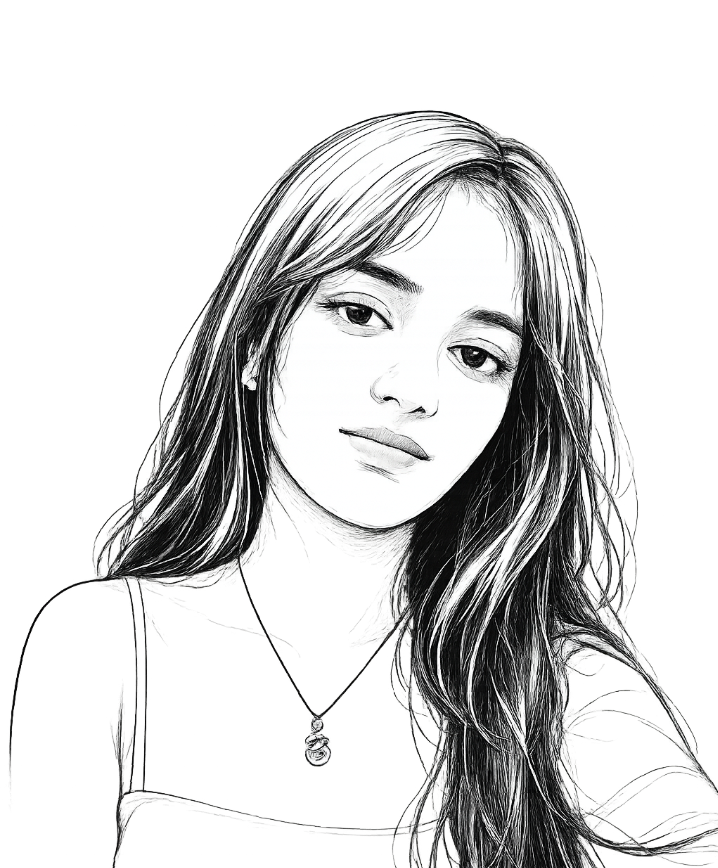

I am a Fashion Design student with a strong interest in contemporary fashion, visual storytelling, and innovative garment development. My design approach combines creativity with functionality, allowing me to transform concepts into thoughtfully crafted collections.
Through my internships as a Junior Fashion Designer at Roots by Sujata Agrawal and as a Visual Merchandiser at Pantaloons, I gained hands-on experience in garment development, design research, trend analysis, visual presentation, and understanding customer-focused fashion. I enjoy exploring new materials, experimenting with textures, and integrating techniques such as 3D elements into my work.
My goal is to create designs that are both visually impactful and commercially relevant while continuously learning and evolving as a designer. I am currently seeking opportunities where I can contribute my creativity, technical skills, and passion for fashion while growing within a collaborative design team.
Final-year Fashion Design student exploring modern silhouettes, materials and design concepts, with a focus on developing creative and wearable designs.
Design development for shirts, campaign poster design, fabric selection and customization, client communication, fabric manipulation and studio documentation.
Developed and executed final visual display designs across six in-house brands, including floor planning, fixtures, props, lighting, colour and signage.
Assisted backstage operations for Anurag Gupta's collection, supporting garment handling, model coordination and quick changes during live show execution.
Presented a sustainable clothing collection and served as a member of the Fashion Show Management team.
Awarded first place in an upcycling design computation for sustainable garment development.
Recognised for research and conceptualisation contributing to the Pranpur Chanderi textile heritage project.